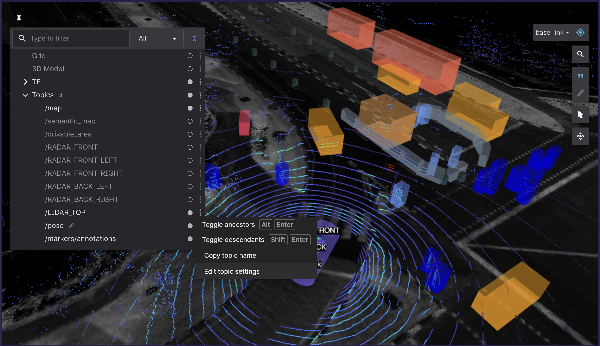

Visualizing ROS 2 data with Foxglove Studio [待校准@1163]
Foxglove Studio is an open source visualization and debugging tool for your robotics data. [待校准@1164]
It is available in a variety of ways to make development as convenient as possible – it can be run as a standalone desktop app, accessed via your browser, or even self-hosted on your own domain. [待校准@1165]
View the source code on GitHub. [待校准@1166]
Installation [待校准@1167]
To use the web app, simply open Google Chrome and navigate to studio.foxglove.dev. [待校准@1168]
To use the desktop app for Linux, macOS, or Windows, download it directly from the Foxglove Studio website. [待校准@1169]
Connect to a data source [待校准@1170]
On opening Foxglove Studio, you will see a dialog with a list of all possible data sources. [待校准@1171]
To connect to your ROS 2 stack, click "Open connection", select the "Rosbridge (ROS 1 & 2)" tab, and configure your "WebSocket URL". [待校准@1172]
You could also drag-and-drop any local ROS 2 .db3 files directly into the application to load them for playback. [待校准@1173]
注解
In order to load custom message definitions in your ROS 2 files, try converting them to the MCAP file format. [待校准@1174]
Check out the Foxglove Studio docs for more detailed instructions. [待校准@1175]
Building layouts with panels [待校准@1176]
Panels are modular visualization interfaces that can be configured and arranged into Studio layouts. You can also save your layouts for future use, for your own personal reference or with your larger robotics team. [待校准@1177]
Find the full list of available panels in the sidebar's "Add panel" tab. [待校准@1178]
We've highlighted some particularly useful ones below: [待校准@1179]
1 3D: Display visualization markers in a 3D scene [待校准@1180]
Publish marker messages to add primitive shapes (arrows, spheres, etc.) and more complex visualizations (occupancy grids, point clouds, etc.) to your 3D panel's scene. [待校准@1181]
Choose the topics you want to display via the topic picker on the left, and configure each topic's visualization settings in the "Edit topic settings" menu. [待校准@1182]
{kind=link}
Reference the docs for a full list of supported message types and some useful user interactions. [待校准@1184]
2 Diagnostics: Filter and sort diagnostics messages [待校准@1185]
Display the status of seen nodes (i.e. stale, error, warn, or OK) from topics with a diagnostic_msgs/msg/DiagnosticArray datatype in a running feed, and display the diagnostics data for a given diagnostic_name/hardware_id. [待校准@1186]
![Foxglove Studio's Diagnostics panel `[待校准@1187] <http://dev.ros2.fishros.com/calibpage/#/home?msgid=1187>`_](../_images/diagnostics.png)
Reference the docs for more details. [待校准@1188]
3 Image: View camera feed images [待校准@1189]
Select a sensor_msgs/msg/Image or sensor_msgs/msg/CompressedImage topic to display. [待校准@1190]
![Foxglove Studio's Image panel `[待校准@1191] <http://dev.ros2.fishros.com/calibpage/#/home?msgid=1191>`_](../_images/image.png)
Reference the docs for more details. [待校准@1192]
4 Log: View log messages [待校准@1193]
To view rcl_interfaces/msg/Log messages live, use the desktop app to connect to your running ROS stack. To view rcl_interfaces/msg/Log messages from a pre-recorded data file, you can drag-and-drop your file into either the web or desktop app. [待校准@1194]
Next, add a Log panel to your layout. If you've connected to your ROS stack correctly, you should now see a list of your log messages, with the ability to filter them by node name or severity level. [待校准@1195]
Reference the docs for more details. [待校准@1196]
5 Plot: Plot arbitrary values over time [待校准@1197]
Plot arbitrary values from your topics' message paths over playback time. [待校准@1198]
Specify the topic values you want to plot along the y-axis. For the x-axis, choose between plotting the y-axis value's timestamp, element index, or another custom topic message path. [待校准@1199]
![Foxglove Studio's Plot panel `[待校准@1200] <http://dev.ros2.fishros.com/calibpage/#/home?msgid=1200>`_](../_images/plot.png)
Reference the docs for more details. [待校准@1201]
6 Raw Messages: View incoming topic messages [待校准@1202]
Display incoming topic data in an easy-to-read collapsible JSON tree format. [待校准@1203]
![Foxglove Studio's Raw Messages panel `[待校准@1204] <http://dev.ros2.fishros.com/calibpage/#/home?msgid=1204>`_](../_images/raw-messages.png)
Reference the docs for more details. [待校准@1205]
7 Teleop: Teleoperate your robot [待校准@1206]
Teleoperate your physical robot by publishing geometry_msgs/msg/Twist messages on a given topic back to your live ROS stack. [待校准@1207]
![Foxglove Studio's URDF Viewer panel `[待校准@1208] <http://dev.ros2.fishros.com/calibpage/#/home?msgid=1208>`_](../_images/teleop.png)
Reference the docs for more details. [待校准@1209]
8 URDF Viewer: View and manipulate your URDF model [待校准@1210]
To visualize and control your robot model in Foxglove Studio, open the web or desktop application and add a URDF Viewer panel to your layout. Then, drag and drop your URDF file into that panel to visualize your robot model. [待校准@1211]
![Foxglove Studio's URDF Viewer panel `[待校准@1208] <http://dev.ros2.fishros.com/calibpage/#/home?msgid=1208>`_](../_images/urdf.png)
Select any topic publishing a JointState message to update the visualization based on the published joint states (defaults to /joint_states). [待校准@1212]
Toggle to "Manual joint control" to set joint positions using the provided controls. [待校准@1213]
![Foxglove Studio's URDF Viewer panel with editable joint positions `[待校准@1214] <http://dev.ros2.fishros.com/calibpage/#/home?msgid=1214>`_](../_images/urdf-joints.png)
Reference the docs for more details. [待校准@1215]
Other basic actions [待校准@1216]
1 View your ROS graph [待校准@1217]
Using the desktop app, connect to your running ROS stack. Next, add a Topic Graph panel to your layout. If you've connected to your ROS stack correctly, you should now see a computational graph of your ROS nodes, topics, and services in that panel. Use the controls on the right side of the panel to select which topics to display or to toggle services. [待校准@1218]
2 View and edit your ROS params [待校准@1219]
Using the desktop app, connect to your running ROS stack. Next, add a Parameters panel to your layout. If you've connected to your ROS stack correctly, you should now see a live view of your current rosparams. You can edit these parameter values to publish rosparam updates back to your ROS stack. [待校准@1220]
3 Publish messages back to your live ROS stack [待校准@1221]
Using the desktop app, connect to your running ROS stack. Next, add a Publish panel to your layout. [待校准@1222]
Specify the topic you want to publish on to infer its datatype and populate the text field with a JSON message template. [待校准@1223]
Selecting a datatype in the dropdown of common ROS datatypes will also populate the text field with a JSON message template. [待校准@1224]
Edit the template to customize your message before hitting "Publish". [待校准@1225]
![Foxglove Studio's Publish panel `[待校准@1226] <http://dev.ros2.fishros.com/calibpage/#/home?msgid=1226>`_](../_images/publish.png)